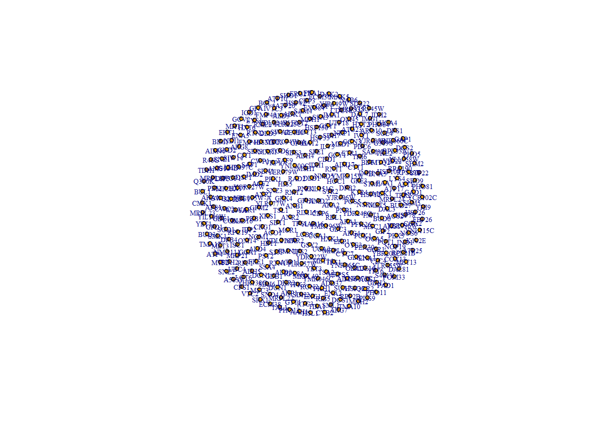

Code
# Load in our data
proteomic <- read.csv("trimmed_proteomic_Data.csv")Hsp90
Erick Rios
May 3, 2023
The focus of my research is the study of Hsp90 molecular chaperone. Over the decades we come to realize this chaperone sits as a major hub of protein-protein interactions (CITE GOPINATH) in which it regulates the folding, activity, and degradation of its clients.
The current study expands the proteomic analysis previously done by us (CITE GENETICS PAPER), here we use quantitative proteomic analysis to compare extracts from yeast expressing wild-type yeast Hsp90 to nine different mutants. Our results demonstrate that the mutants elicit varied proteomic responses, even though the cells were harvested at temperatures that do not significantly affect growth. Overall, these results suggest:
It is possible to selectively inhibit Hsp90 function in vivo, and
Identifies cellular processes and/or likely clients that may be differentially affected by Hsc82 mutation.
Data source:
Main data used in this analysis are the results of Data Independent Acquisition Mass Spectrometry (DIA-MS) experiments, a technique for quantitative proteomics. This is the crux of our study. For brevity, the data has been pre-filtered for significant hits of interest for analysis.
Supporting data/information publicly available on Saccharomyces Genome Database (SGD) (MAKE LINK)
Data Dictionary
Warning: package 'igraph' was built under R version 4.1.3
Attaching package: 'igraph'The following objects are masked from 'package:stats':
decompose, spectrumThe following object is masked from 'package:base':
unionSince our objective is to construct a protein interaction network, intuitively our nodes will be our significant hits found in our study. However, we must also include our experimental variables, in this case single point mutations in the Hsp90 chaperone, this will help promote separation/clustering between nodes later when we apply our measurements from DIA-MS.
# Visualize 350 nodes corresponding to the significant hits in our data
nodes <- unique(c(proteomic$contrast, proteomic$Gene))
g <- make_empty_graph(directed = FALSE)
g <- add_vertices(g, length(nodes))
V(g)$name <- nodes
plot(g,
margin = -.4,
vertex.size = 4,
vertex.label.cex = .5,
xlim=c(-1.5, 1.5), ylim=c(-1.5,1.5)
)
Now we must establish the relationship between these nodes. Starting with the relationship between our protein hits and experimental variables (Hsp90 mutants). These proteins were found to have a significant change in abundance when at least one mutant Hsp90 is expressed as the sole source of Hsp90.
Color the edges of the protein-mutant relationship based on increase or decrease (green / red;consider color blind plebs though.)
Edge thickness can be p value of measurement and/or
edge color opacity/transparency for p value
Edge length will be Log base 2 fold change; this will pull proteins nodes towards mutants that have significant impact on said protein
edges <- data.frame(
from = proteomic$Gene,
to = proteomic$contrast,
LogFC = proteomic$logFC,
p = proteomic$P.Value
)
# Convert edge list to indices
edges$from <- match(edges$from, nodes)
edges$to <- match(edges$to, nodes)
# create a list of alternating values from 'from' and 'to' columns
edge_list <- c(rbind(edges$from, edges$to))
g <- add_edges(g, edges = edge_list)
# Specify edge length based on attribute: LogFC, but undo the Log base 2 so larger LogFC have more influence
edge_weights <- abs(edges$LogFC)^2 + 10
E(g)$weight <- edge_weights
# Plot the network
plot(g,
margin = -1,
vertex.size = 4,
vertex.label.cex = .5,
edge_arrow_mode = 0,
xlim=c(-2, 2), ylim=c(-2, 2)
)---
title: "BCB 520 - The Final Portfolio Post"
subtitle: "Hsp90"
format:
html:
toc: false
echo: true
author: "Erick Rios"
date: "2023-05-03"
categories: [Portfolio, DataViz, Network, Observable, Assignment]
image: "yeastbud.png"
description: "Research"
code-fold: true
code-tools: true
---
# The Preamble
The focus of my research is the study of Hsp90 molecular chaperone. Over the decades we come to realize this chaperone sits as a major hub of protein-protein interactions (CITE GOPINATH) in which it regulates the folding, activity, and degradation of its clients.
The current study expands the proteomic analysis previously done by us (CITE GENETICS PAPER), here we use quantitative proteomic analysis to compare extracts from yeast expressing wild-type yeast Hsp90 to nine different mutants. Our results demonstrate that the mutants elicit varied proteomic responses, even though the cells were harvested at temperatures that do not significantly affect growth. Overall, these results suggest:
1. It is possible to selectively inhibit Hsp90 function *in vivo*, and
2. Identifies **cellular processes** and/or likely **clients** that may be differentially affected by Hsc82 mutation.
# Data
Data source:
1. Main data used in this analysis are the results of Data Independent Acquisition Mass Spectrometry (DIA-MS) experiments, a technique for quantitative proteomics. This is the crux of our study. For brevity, the data has been pre-filtered for significant hits of interest for analysis.
2. Supporting data/information publicly available on *Saccharomyces Genome Database (SGD)* (MAKE LINK)
- List of currently known protein **physical** interactors of Hsp90 (Both Hsc82 and Hsp82 isoforms)
- List of currently known protein **genetic** interactors of Hsp90 (Both Hsc82 and Hsp82 isoforms)
- Results GO term analysis using GO Slim Mapper
3. Supporting data/information publicly available on
- Physical protein attributes such as molecular weight, hydrophobicity, etc.
```{r}
# Load in our data
proteomic <- read.csv("trimmed_proteomic_Data.csv")
```
Data Dictionary
```{r}
```
# Visualization
## Creating Figure 1: Basic static 'network'
```{r}
library(igraph)
```
### NODES
Since our objective is to construct a protein interaction network, intuitively our nodes will be our significant hits found in our study. However, we must also include our experimental variables, in this case single point mutations in the Hsp90 chaperone, this will help promote separation/clustering between nodes later when we apply our measurements from DIA-MS.
```{r}
# Visualize 350 nodes corresponding to the significant hits in our data
nodes <- unique(c(proteomic$contrast, proteomic$Gene))
g <- make_empty_graph(directed = FALSE)
g <- add_vertices(g, length(nodes))
V(g)$name <- nodes
plot(g,
margin = -.4,
vertex.size = 4,
vertex.label.cex = .5,
xlim=c(-1.5, 1.5), ylim=c(-1.5,1.5)
)
```
Now we must establish the relationship between these nodes. Starting with the relationship between our protein hits and experimental variables (Hsp90 mutants). These proteins were found to have a significant change in abundance when at least one mutant Hsp90 is expressed as the sole source of Hsp90.
- Color the edges of the protein-mutant relationship based on increase or decrease (green / red;consider color blind plebs though.)
- Edge thickness can be p value of measurement and/or
- edge color opacity/transparency for p value
- Edge length will be Log base 2 fold change; this will pull proteins nodes towards mutants that have significant impact on said protein
```{r}
edges <- data.frame(
from = proteomic$Gene,
to = proteomic$contrast,
LogFC = proteomic$logFC,
p = proteomic$P.Value
)
# Convert edge list to indices
edges$from <- match(edges$from, nodes)
edges$to <- match(edges$to, nodes)
# create a list of alternating values from 'from' and 'to' columns
edge_list <- c(rbind(edges$from, edges$to))
g <- add_edges(g, edges = edge_list)
# Specify edge length based on attribute: LogFC, but undo the Log base 2 so larger LogFC have more influence
edge_weights <- abs(edges$LogFC)^2 + 10
E(g)$weight <- edge_weights
# Plot the network
plot(g,
margin = -1,
vertex.size = 4,
vertex.label.cex = .5,
edge_arrow_mode = 0,
xlim=c(-2, 2), ylim=c(-2, 2)
)
plot(g,
vertex.size = 4,
vertex.label.cex = .5,
edge_arrow_mode = 0,
xlim=c(-1.5, 1.5), ylim=c(-1.5,1.5)
)
```